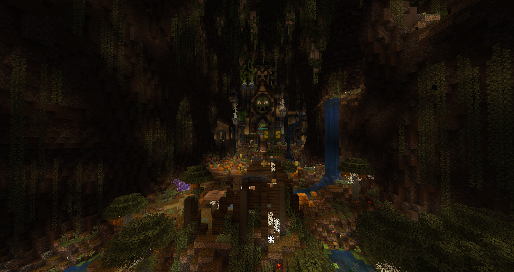

Map Author: heliceo & Suso
Origin: Map Link
Versions: MC = 1.20.1 - Map = 1.0
Presentation
Ragecraft 4 - Underworld is a full length CTM map. Ragecraft 3 has been one of the most influential maps for the beginning of the modern CTM maps, so it goes without saying that this was a very anticipated release… But not for me, I wasn’t following progress or checking teasers, I knew it would come out at some point but I wasn’t expecting or waiting on anything - it comes out when it comes out and I’ll see how it holds up then. However if you haven’t played this map yet, I ask you to do so first before reading more. BEGONE!
Overview
The Descent - White
The first area always has a difficult weight to bear, here it had a great mix of old school survival with modern mechanics. The water has great level design interactions, and the level design is just top tier to slowly introduce the player to more complex finds. The low amount of coal made me feel like a crack addict scraping the bits I could find, and I ran out at the monument. It’s not an area where I have a lot to say, but I have to highlight the beehive encounters as great one-ofs that maybe should be done more often in maps.
The Nexus - Monument
It’s a really pretty place, although things are a bit too spread out sadly. I wasn’t sure where to have the base of operation due to the teleporter room, monument, and forge being a walk away each, even with speed 2 it felt a lot of time spent on moving around. Glad to see so many dogs in the garden! The portable portal is a fantastic idea and a smart way of solving the teleporters not always covering enough space.
Finally, the biggest talk of the map, the cornerstone of the adventure, the rune forge is a really intricate upgrade system allowing a lot of gear freedom. Exactly the kind of custom upgrading I wished to see. Although it leaves the smithing table upgrade in the dust with the way it works, meaning you need to be careful to upgrade before building the items and some custom ones simply can’t. Overall it is fantastic and a real pleasure being able to apply abilities instead of being constrained to single items that don’t evolve.
The Rock - Orange
So much immersion! The villagers have sleeping rooms, only in this map can I roleplay Steve the Barbarian destroying blazes with axe throws. This is where it really becomes apparent that areas really don’t joke around and you’ll need to explore to find the next path and objective. The havoc axe is insaaaane! The enemies also follow that path with thematic elite abilities, it’s clear combat will stay complex as things progress.
Illager’s Keep - Magenta

The combat is becoming more intense, and it really pushed me to use my aoe weapons and abilities, the infiniflasks are really well made to push regular use while staying balanced. The area palette felt a bit dark but the level design is made in a way you don’t have to care about dark corners. New offhand combined with axe throw transformed me into the doom slayer, it’s become clear that the map will thrive in giving you pieces to assemble with deadly synergies. The first riddle was really fun and clever.
The potion traps felt a bit random and kinda unfair (after all, it uses function detection, nothing in the game directly) however the tell blocks were changed since to become more apparent. I believe hiding the strength buff(and other timed active buffs) from the ruby offhand was a mistake despite being intentional, because then the icon doesn’t show up in combat and it forces guesswork to know if it’s active or not. I tend to prefer hiding permanent effects and intentionally keeping the occasional bursts as visible to give a visual tell.
Most elites and the boss having a sort of projectile shield or magic immunity felt like a necessary choice to ensure things wouldn’t go too out of hand with so many good tools given. Speaking of the boss, it was just the right amount of incredible and a good test of my arsenal. I was allowed to go ham with my axe and the spells forced some adaptation, the antipoison flask became an important element to remove hazard and my only regret was the lack of such weakness type mechanics in the map - even if some got close to it. I liked the separation in rooms for each phase of the battle and the incremental variation it kept adding to the fight, having to deal with the statues and pits by needing survival block placing was something too rarely seen in boss fights, which is exactly the reason of a small nitpick: the second room, introducing pits in the battle, has small walkways to reach the boss but in truth you really want to fill the holes first and if it forced you more to do so it could’ve taught me faster instead of needing several deaths by falling.
Boombog Bastion - Light Blue
It certainly begins with a DoT jungle area full of spiders and creepers, thankfully the flasks make it quite fun by acting as a solution to some of the dangers. It is quite full of valuable things to find and truly reward going on the sidepaths - I loved solving the maze and the optional boss was neat even if a bit more standard. Made a truly deadly cleaver for 39 damage on crits, you can call me the Butcher now. The many custom options give us a lot of fun pieces to brew with and it keeps expanding.
The castle part was more standard, taking a side path led me closer to the objective than I expected so it felt short if I didn’t count the jungle. The flying creepers were very deadly since the moment you hear them it’s already too late, NANI!? The queens were a good problem solved by using aoe.
Prismarine Empire - Yellow
Underwater areas are only so bad as the ranged options given, and in this map we’re spoiled. Using spells, axe throws and the noxious trail meant I had a fair chance fighting the enemies in molasses. I even got to use the turtle helmet I found the previous area. Modern minecraft tech really allowed water gameplay to feel how it should’ve been all along, cool and good. The casters with unstoppable seeking missiles felt overkill combined with skeletons and trident drowneds.
Crystal Quarry - Lime
This area felt more like a rest area, with less intense elites and simple terrain, acting as an intersection it makes sense. On the other hand it was jam-packed with incredible runes and my gear got a lot of upgrades. The final segment was cool (badum tss) and thankfully not too long, it could have gone very wrong with a different design. Perfect to make zoom zoom players malding. I took the time to find the teleporters to each further area before clearing it.
Obsidian Throne - Pink
A fairly high difficulty spike, along with the ruined terrain this area is nervous and deadly. I finally found an amazing axe(Crescent Moon) that made me change from the axe throw ability to a shadow grab, and it also pushed me to completely redo my entire armor setup and offhand, big build turnaround for Frozen Grasp!
Full on debuff and sadism, finally getting leggings suffix runes too to benefit from the many buffs. The looks are also incredible with fun gameplay going from top to bottom. My favorite area by far, with every mob design fitting well even if the level design is more flat. The final segment was the perfect place to try out my new build and it was a slaughter, ghasts and blazes don’t stand a chance.
Watcher’s Realm - Gray
A really cool theme, but sadly I think the mechanic puts too much pressure on the player and it made it not pleasant by pushing me to make mistakes. Combined with a fairly creeper heavy area, many opportunities to get one shot arose. Thankfully it’s short, I’m glad to be done with it… The second part was easier than the first due to much larger land to navigate, which felt like the area might have flowed better if it was the opposite progression that had happened - from large to narrow.
Cannibal Slaughterhouse - Light Gray
It begins with a tough boss fight where my newly made build was completely negated, oof. The first phase had me struggling most, then the second killed me because I wasn’t aware I would need the antipoison flask. After that, I was able to defeat the boss using my strong bow and some positioning to avoid being encircled and patiently waiting for opportunities to strike. Pretty fun overall even if the arena was a bit bland.
Then the new area was really cool, bloody water is always a hit for me and the villager sidequest was fun to mix in the area goals. The super axe elite using our own abilities was a cool twist and they’re great here, butcher against butcher. The riddle felt alright, but too mechanical and easy to randomly solve so not as interesting. Xin’s challenge on the other hand was pretty fun and easy enough that even a parkour hater like me didn’t struggle much.
The introduction of a new type of runes/resource was a bit more mixed, I felt like a good amount of the new lower level ones were just filler already weaker than previous ones. My inventory at this point is suffering, so many resources, unique items, runes, tools, it’s still manageable thanks to the shulker box and teleport tools, but that makes the long path from the tp room that much longer. I tried a thunder slam build but it felt so lackluster I went back to Frozen Grasp.
Empyrian Gardens - Cyan

A simpler area, with the biggest particularity being the many fast nat zombees creating a hounding sense while progressing, working especially well in the hanging vines maze. The second segment was more interesting, the visibility quite impaired changed the gameplay by needing to be more careful. It made me wish for spurs though, breaking the grass added a lot of tedium this could have solved. The beekeeper elite was incredibly effective and thematic.
Dreadfire Stronghold - Purple
A cleaner area, with straight paths and rooms, and the main danger coming from the enemy hazards and verticality - it was a fun and tense time teetering on the edge. Somehow there was a lack of blaze encounters spam where it would have made the most sense. It took me a while to go clear the area because I got lost in the next 3 areas trying to clear loose paths. The diamond cleaver is insanely good and feels like the best axe variant by far, the halberds being way too slow at this point when combat always requires fast reaction to the many mobs attacking.
I kept shadow grasping the blademaster elites and they kept trolling me by jumping away, grr. I didn’t feel a lot of threat from fire overall, when are we banning water buckets completely from maps? The pickaxe was a blast, and I was glad the tnt room gave the most important item first, but the mobs felt too rng to really feel doable. On the other hand, why wasn’t all the TNT primed? You’re being too nice.
Simulacrum - Blue

It’s an interesting area with powerful enemies to deal with, similarly to Pink each mob here feels like a unique threat but here it’s really cursed, the hardest part of the area is the messy terrain making traversal and charting difficult. Due to that, I really had to make use of shadow grasp and some ranged backup, pure melee is a terrible choice here even if you need an answer to the zombie hounding which is more dangerous than in area 10. The riddle took a bit to understand, but once it all clicked it was a really fun solving.
I liked the theme and mob designs and the second part was great, it gave me flashbacks from the best Divinity’s End area. The banshees didn’t cause me that much trouble thanks to my build being strong enough to kill them before the ability triggering… most of the time. Getting blindness after each teleportation was maybe a bit much when the player is already disoriented and now you struggle seeing the threats right around you.
House of Horror - Brown

Loving the spooky designs and the gameplay is clean and dangerous, what I needed after the messy terrain, the vampire elite is once again a great thematic encounter that pushes you to use aoe. Just like for Gray, I wished the darkness halls were lifted to explore more properly once the area is completed, not that I didn’t manage to clear it in the dark. I found a new axe ability that made me decide to completely switch my build once again. Going full Frenzied Flame with the void rage ability to regain all the mana I spend attacking and getting haste 2 and absorption orbs on kills along fire attacks and trail. RIP AND TEAR!
The final riddle was incredible and the creeper paranoia maze was everything you could want from ragecraft. When I entered the theatre stage I expected a warden to come out… I wonder why.
Frigid Palace - Green
A pretty unique area, where your build directly affects how you will handle the mechanics. Knowing it was coming certainly helped me choose my new build and the fire trail ensured I could move around safely in this treacherous land of ice. The elites are getting quite bulky and the mobs don’t joke around, thankfully I’m just as strong and the tools aren’t few.
This is the area that played around the most with environmental mechanics directly tied with mob design. There was a surprisingly low amount of powdered snow use. So… many… fire… particles… Other than that I don’t have much to say about this area, it was a stronger counterpart of Purple, and an overall fun area.
Voidstorm Citadel - Red
The Gatekeeper was really fun and intense, the right amount of dangerous and also required some survival building to defeat it - I was glad my build was reworked to have fire res and I used a few of the many consumables stored. I wonder what happens if you run out of redstone during the fight if you didn’t plan for it to need so much? Maybe it would be nice to make the redstone guards drop 3 extra dusts along the block?
The first half of this area doesn’t joke around, with a very deadly elite to boot. Made me change my build, removing the fire side to go for full Exalted Rage, sadly that means I didn’t get to benefit more from the torch convenience. I feel like the mushrooms should have given you an encyclopedia tell after the first, I instantly died because I didn’t understand it and ran into 3 at once. Navigating the terrain was a bit exhausting in the fog and I was glad that the second part of the area was smooth and clean pathways. Somehow it felt easier than the first half despite the more intense fighting, maybe it was because I fully unlocked the potential of my build, becoming a machine of death. The crystal guardians and wardens were a fun twist on the key mechanic for an overall solid area.
Ruptured Realm - Black
The final area in big CTM maps tends to be a retrospective in some way, looking back to the journey before the last stop. Somehow the mobs have never been this deadly, but I feel like I transcended my mortal condition and shred through it all with ease aside the unique abilities that I can’t brush off. The elytra use felt a bit performative and not that useful, would’ve been more fun to have obstacle weaving to do in each transition. The revisited areas are really cool with the old improved items and mobs, and the permanent void hunt replaces the lack of nat spawns to create pressure in the familiar spaces.
And to top it all off, the big finale against the crystal is really good. The soft keys just before are an interesting way to allow a harder fight if you wish to. At that point I had a really powerful build so I didn’t struggle too much blind, but it still felt like a worthy battle. Although one criticism I could have (and slightly global to the full area as well) is that the sculk mechanic is underexploited, at that point the player is already super buffed and that makes the system feel like a sidenote which doesn’t hold a lot of relevancy, unlike green where you had to clear it out to kill some mobs. Keeping in that line for the boss battle, aside my personal hate for jump boost and where it messed with fighting because I didn’t pay attention to not jump from it, what I felt was lacking was that unlike all the other major boss fights which had a mechanic or phase that required you using survival mechanics in some way (Crypt needed to block out gaps, Metamorph needed to build walls to break gaze, Gatekeeper needed to connect redstone circuitry) this fight didn’t introduce a similar one and settled with only spawners to break. Other than that, the elite hunting, variating powers, periodic buffs and attacks, some very light platforming, all combined into an intense and rewarding final battle.
Conclusion

Now where does this leave us? The map had a less condensed gameplay style, more like a journey with nat spawns bridging the lower amounts of spawners on the path - those nat spawns being really well balanced and interesting. Usually this would mean the gameplay would suffer from entropy syndrome but here the level design also masterfully integrated the gameplay and paths - with the monument being the only exception, where the looks were prioritized. This journey style also meant less secrets to hunt for, with most corners not being worth checking, a larger scale of exploration. A small sidenote was that elite spawners could’ve been made into preloaded normal mob spawners, instead of being a dead one after the initial spawn.
It pains me to say this when so much care was put into it, the death system… it didn’t feel like it brought something (aside the cool factor), but I’m aware this is a more global design conflict I have with grave systems used in modern maps. To explain what I mean, modern graves solve the fact you could drop and lose your items on death, preserving them instead, but despite that they still force you to do the tedium of dangerous death runs and recuperating your gear. And that’s where the saddest part comes in: this map solves it, in fact the resource needed to spend on that is so abundant the cost is barely a sidenote to instantly give your items back. What’s the problem then, you’d say… the problem, it’s that why do we even lose our gear to begin with, if it’s so cheap and easy to get it back? I personally would have preferred having total keepinventory, and instead it taking away a part of xp and maybe some resources, in the end making it cost more than currently, but without having to go through an entire process for the same result. And shutting down completely the need of death runs, because while the option is given to skip the process, it feels faster to just run directly there to continue progress, taking a convenience shortcut that can lead to more deaths because the choice was made to make extra steps. The player isn’t blameless in that problem, yet it’s still a design I felt I had to criticize because it was very relevant during my run. If your gear is protected, why make it tedious to get it back? Sorry for this rant, consider it more of a general critique and not just about this map.
The riddles were quite fun and pretty tough! It’s the kind of bonus content I really crave in maps, we don’t need only combat and the emerald rewards were incredible. I would have loved that vegetation(especially nether plants) and varied blocks had more edited loot tables to completely remove or transform into less clutter in the inventory. In direct consequence of that, the objectives look too plain in the inventory and I almost threw them away more than once. It’s a bit of a niche thing, but I tend to mention when maps add a lot of miscellaneous containers that could benefit the player from not spending the UI time searching, hence locking irrelevant ones. In some areas, the keys felt a bit too much like a mcguffin and sometimes led to an anticlimactic resolution, in Pink the keys are just existing but it ends in an epic throne room gauntlet, while in Red it’s expertly thematic but ends in “you did it”, Brown suffers from the same aspect.
I loved the potions that don’t hurt us and the unique spell wands, providing many tools. Standard minecraft makes it hard to want to use more than big stick bonk but here not only was it necessary it was actually fun and actively engaging. The many rune abilities really rewarded homebrewing builds and the pieces are really good at allowing synergies, this is something I’ve always wanted to see more of and had started to lean more into so it’s very pleasing to see it done so well here. There was a strange gap in progression, due to having too many helmet suffix runes and not enough leggings options until very late, it would have felt better if it was more even instead of looking at 20 helmets options knowing only 3 or 4 will really be used in the run.
And for the biggest meal, the forge system is amazing, the runes add a fun aspect to loot where it tends to always have potential worth and it allows you to customize gear a lot. Hooooowever (here comes the nitpicker), it’s unfortunate that upgraded items break the smithing upgrade system, and that’s an issue I also had to deal with in my own system so I know there’s no easy solution to keep pretty attributes and upgrading. I also would have loved a way to overwrite rune slots on an item, but that just might not be compatible with the system. And at last but not least, repairing and durability felt like a superfluous vanilla mechanic in this map. Resources are so abundant that most of the time repairing is costing more (if you die you lose all xp) than just remaking items, and it’s never really an issue. It doesn’t provide tension or scarcity, durability becomes only an annoying inconvenience when so much effort is put into making the custom items.
The fact the only criticism I really have is nitpicking and personal preferences shows how much care has been worked into this map, testing period and post-release included. It’s hard to describe from the present the impact it will have in future times, but after discussing a lot about how the map came into fruition and experiencing the final result it is clear it deserves to be called a turning point in CTM history, just as its predecessor was. I had an incredible time, and so will many others.